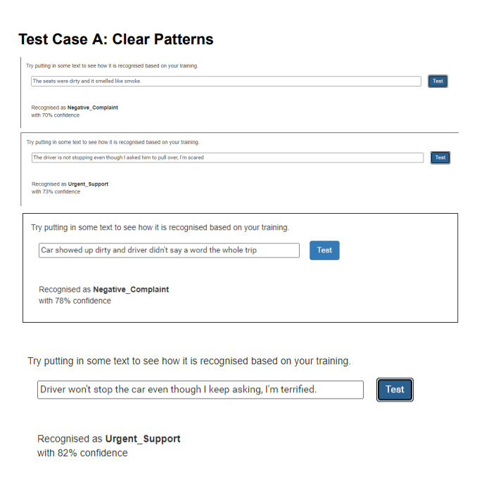

PT-P1: Deep Learning (Neural Networks)
A classifier trained on 35 examples labelled 88.6% of unseen phrases correctly. Sarcasm and off-topic questions were where it broke.
- Tools
- Machine Learning for Kids · MIT App Inventor
- Classes
- Positive review · Negative review · Urgent support
- Test set
- 35 unseen phrases
Summary
Built a three-class intent classifier for ride-hailing customer feedback on the no-code Machine Learning for Kids platform, tested it on 35 phrases it had never seen, then connected it to a working MIT App Inventor chat app.
- Overall accuracy 88.6% 31 of 35 unseen test phrases
- Strongest class 93.3% Negative review, 14 of 15
- Weakest class 80.0% Positive review, 8 of 10
- Later formal testing 90.80% Accuracy, with 88.61% F1. Used as the PT-P2 baseline.
Approach
Machine Learning for Kids wraps a text-classification network in three stages, so the whole pipeline runs without writing model code.
- Train: enter tagged example phrases for each class. Positive reviews praise quality or responsiveness; negative reviews complain or ask for refunds; urgent support covers lockouts, failed payments and safety.
- Learn & Test: train the network. This is where raw text is turned into numbers the network can learn from (feature extraction).
- Make: type new phrases and see the predicted class and confidence.
The trained model was then wired into a "Chat Analyzer" screen in MIT App Inventor, which sends each typed message to the classifier (ClassifyText) and shows the label and confidence in real time.
Results
| Class | Correct | Accuracy |
|---|---|---|
| Positive review | 8 / 10 | |
| Negative review | 14 / 15 | |
| Urgent support | 9 / 10 | |
| Overall | 31 / 35 |
Live tests: where it held and where it broke
| Typed phrase | Predicted | Confidence | Verdict |
|---|---|---|---|
| "Driver won't stop the car even though I keep asking, I'm terrified" | Urgent support | 82% | Correct |
| "Wonderful, my driver just drove past my stop again" | Positive review | 64% | Wrong: sarcasm |
| "What payment methods do you accept?" | Positive review | 0% | Wrong: off-topic |
| "Driver locked the doors and won't let me out, I'm scared" | Urgent support | 85% | Correct, after adding examples |
The model matches surface word patterns, not intent: positive words in a sarcastic complaint pull it toward "positive", and a question outside its vocabulary gets a 0%-confidence guess. Adding more negative examples raised confidence on borderline cases.


What I learned
Testing revealed that the model performed well on phrases closely resembling its training data but struggled with sarcasm and topics outside its training vocabulary — both of which improved after targeted refinement of the training set. Building this classifier without writing a single line of model code, and then wiring it into a live App Inventor chat screen, reinforced that in deep learning systems the size, diversity, and representativeness of training data matter as much as the learning algorithm itself, and that feature extraction is a necessary bridge between data collection and model training.
Technical details Rules vs. learning, data, feature extraction
- Rules vs. a trained model. Hand-written IF/ELSE keyword rules break down because the same intent can be phrased endless ways, keywords can't read context such as sarcasm, and the rule set grows without end. A model trained on tagged examples generalizes to unseen phrasing that is statistically similar.
- Dataset size and diversity. With only a handful of examples per class, predictions were unstable and swayed by single words. Ten or more varied examples per class broadened what the model learned and made confidence scores higher and steadier.
- Where feature extraction happens. In the Learn & Test stage, when "Train new machine learning model" converts tagged text into numerical tokens before any weights update. It sits between collecting data (Train) and using the model (Make).
The project was a "Recognizing Text" project created without account registration, with training data stored locally in the browser.
Files
- Reflective report (IEEE format)PDF · prelims-02-reflection.pdf Open PDF
- Chat Analyzer appMIT App Inventor project [APP INVENTOR URL]
- Training and test phrases35 training examples · 35 test phrases [DATASET URL]